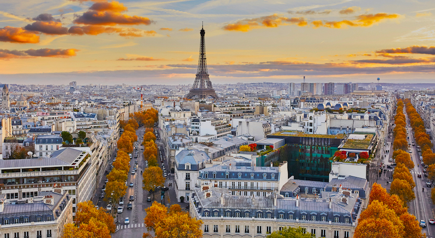
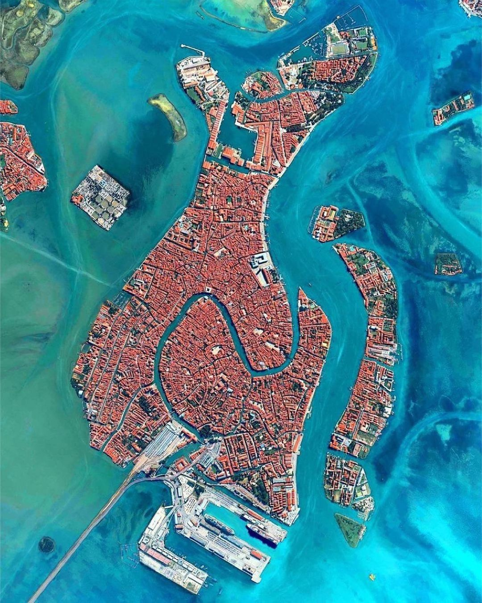
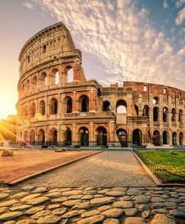

Mid-Range-$1,500-$2,500, Luxury-$3,500-$6,000


| Location | Must-see Landmark | Best Time to Visit | Estimated Travel Cost | One interesting facts | Photo |
|---|---|---|---|---|---|
| Paris, France | Eiffel Tower, Palace of Versailles,D-Day in Normandy | For Ideal Weather and Fewer Crowds: April to June and September to October are perfect for comfortable temperatures and vibrant city life. |
Budget-$1,000-$1,500, Mid-Range-$1,500-$2,500, Luxury-$3,500-$6,000 |
An interesting fact about Paris is that it is home to the world's largest art museum, the Louvre. Originally a royal palace, the Louvre opened as a public museum in 1793 during the French Revolution. It houses over 38,000 works of art, including the iconic Mona Lisa and the ancient Venus de Milo. |  |
| Venice, Italy | Basilica di San Marco,St. Mark's square,The Grand Canal or Canal Grande | For Ideal Weather and Moderate Crowds: April to June and September to October are perfect for comfortable temperatures and fewer tourists or For Unique Experiences visit during the Carnival in winter or the Film Festival in fall for special cultural events. | Venice is built on 118 islands in the Adriatic Sea, connected by over 400 bridges and 170 canals. The city has no roads |  | |
| Rome, Italy | Colosseum,‘Fontana di Trevi’, or Trevi Fountain, vatican museum. | To avoid extreme heat and large crowds while enjoying pleasant weather, late spring (May) and early fall (September) are considered the best times to experience the beauty and history of Rome! | The Colosseum is one of the Seven Wonders of the Modern World. |  | |
| Petra, Jordan | The Siq,The Treasury (Al-Khazneh),The Monastery (Ad-Deir). | The best time to visit Petra is in spring (March to May) and fall (September to November) | Petra is also called the “Rose City” due to its pink sandstone cliffs. | |
|
| Kyoto, Japan | Kinkaku-ji (Golden Pavilion),Fushimi Inari Shrine,Arashiyama Bamboo Grove. | The ideal times to visit Kyoto are in spring (March to May) and autumn (September to November) | Kyoto has over 1,600 Buddhist temples. | |